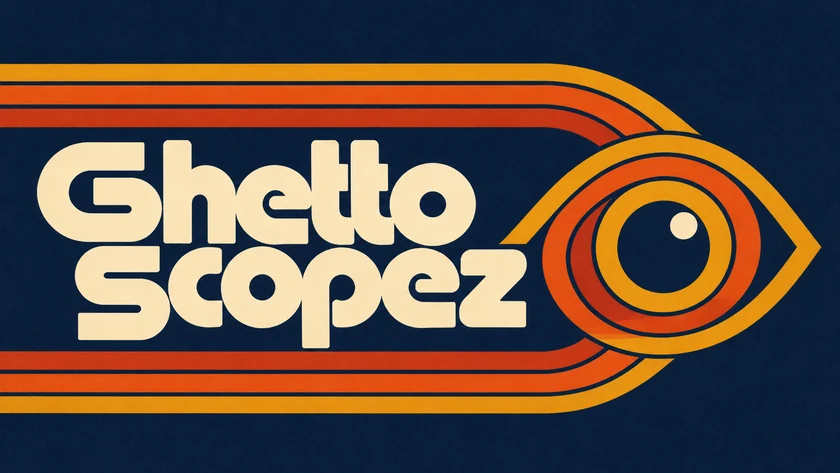

Choose a scope
Tap a scope’s title to change it or choose Off. Use an Add scope menu above the plots to fill an empty position. Up to four scope positions are available.

Show scopes (both familiar & new) for DaVinci Resolve using a tablet, phone, laptop or display with a browser connected to your network.
This release requires macOS 27 or later. You need DaVinci Resolve on a Mac, a recent web browser, and a shared local network. GTap is the Resolve effect that sends the picture to Ghetto Scopez. Nothing needs installing on your phone or tablet.
xcode-select --install if Apple’s tools are not installed, and finish the installation window.cd (with a space), drag the unzipped Ghetto Scopez folder into Terminal and press Return. Then run:bash install.shbash start.shThe release includes a prebuilt GTap effect for Apple silicon and Intel Macs. The installer checks that your macOS version can run it. The effect is locally signed; it is not Apple notarized.
To update, quit Resolve, stop the old host, unzip the new release and run its installer. Start the new host and reopen Resolve. Saved viewer settings stay in the browser when you use the same address.
To remove GTap, quit Resolve and delete /Library/OFX/Plugins/SignalLabTap.ofx.bundle. Stop the host before deleting the Ghetto Scopez folder.
The scopes measure the image at GTap’s node. Choose the input declaration and level range to match that image. Encoded luma readings are not calibrated screen brightness in nits.
The Mac and host must stay running. You do not need an account or cloud service. Picture data is sent across your local network; use a network you trust.
Tap a scope’s title to change it or choose Off. Use an Add scope menu above the plots to fill an empty position. Up to four scope positions are available.
Open Settings to change the arrangement. If all scopes are off, tap Choose layout in the middle of the screen. On a phone in portrait, a single scope or vertical stack gives each plot more room.
Tap Controls to reveal listening, trace and overlay controls. The popup fades after a short idle period; tap Controls again to reopen it.
Tap Fullscreen for more space. Availability depends on the browser. Some Safari swipe gestures may leave fullscreen; return with the Fullscreen button.
Gain brings faint trace detail forward. Brightness changes how bright the trace looks. These controls change the display, not your grade. Colour and smoothing options let you choose the trace appearance.
Use pinch or the mouse wheel on supported plots to zoom. Use Reset to return to the starting view. Vectorscope magnification enlarges the trace while reference markings stay in place.
The host indicator tells you whether the viewer is connected. The frame status tells you whether fresh data is arriving. A paused image can stay on screen while you compare it.
Shows levels from the left to the right of your image. Higher marks mean higher signal levels. Choose a plain trace, source colours or false colours by level.
Shows red, green and blue levels side by side. Compare the channels to spot colour casts and differences in their high and low levels.
Shows how many pixels sit at each channel level. Choose overlaid channels, separate channels or a single colour channel.
Show colour direction and strength. Marks near the centre are less colourful; marks farther out are more colourful. Choose the full image, highlights, midtones, shadows or a combined highs/mids/lows strip.
Shows colour balance across image levels in two related plots. Choose a vertical or horizontal orientation. Colour guides remain visible even with a plain trace; the neutral axis is optional.
Shows the spread of RGB colours in a cube. Drag with a mouse or finger to rotate it, pinch or scroll to zoom, and use Reset to restore the view.
Shows colour strength from left to right and encoded luma from bottom to top. Use it to see whether stronger colours sit in darker or brighter parts of the image.
Shows which hue angles appear most often. Almost grey and very dark pixels are excluded because they do not give a useful hue reading.
The highlight and shadow boundaries can be adjusted in Settings. Colour targets and the skin-tone line are comparison guides, not a requirement that every subject must match them.
In the region controls, capture a source preview and drag a rectangle over the area you want to measure. The scopes then use that region. Reset the region to measure the whole frame again.
Choose All colours, Skin hue range or Selected colour. Capture a selection preview and pick a colour, then refine the hue, saturation and luma limits. Excluded pixels appear dimmed in the preview. The selection applies to all scopes and stays inside your chosen region.
Skin hue range selects colours, not faces. Adjust it for the subject and lighting.
Each scope keeps three references. A fourth capture replaces the oldest. Clear removes that scope’s references; Settings also offers Clear all. A reference with an incompatible range or colour space is hidden until the settings match.
References stay in that browser on that device. They are separate from settings files. Clearing browser data can remove them; opening another browser or a different viewer address does not bring them along.
The viewer remembers your settings in the current browser. Use Save settings to save a settings file, and Load settings to open one on another device. On phones and tablets, the browser may put saved files in Downloads; use the Files app or browser download menu to find them.
Reset to defaults restores the starting setup. Settings files do not include saved A/B/C scope references.
Quality changes the display resolution of the plots. Auto is a good starting point; lowering it can help a slower device. It does not change the chosen image region. Keep Debug off for normal use.
Check that the host is still running on the Mac and both devices are on the same local network. Use the current address in GTap’s panel. Allow incoming local connections if the Mac firewall asks. Guest Wi-Fi, a VPN or network isolation can prevent devices from reaching each other.
Tap Start listening. Check that GTap is enabled on a node in the current clip and the panel says the host is connected. Play, scrub or change a grade to send a frame. Check that the scope is not Off and that a colour selection or small region is not excluding the picture.
Check GTap’s node position, declared input primaries and the viewer’s level range. A transform after GTap will not appear in the measurements. Reset the image region and colour selection to include the whole image.
Try fewer scopes, a lower display Quality and a stronger local network connection. Source-coloured waveforms can be demanding. Update speed depends on the picture, Mac, browser and receiving device.
Quit Resolve, rerun the installer and check its result. Reopen Resolve and check the Effects library. If macOS blocks the effect, review the message in Privacy & Security. The supplied effect is not notarized.
Browsers can limit keeping the display awake and fullscreen. Check the device’s auto-lock setting. Re-enter fullscreen with the button after a browser gesture closes it.
For a problem report, include your Mac and device models, OS and browser versions, Resolve version and what you were doing. Report an issue on GitHub.
Ghetto Scopez and GTap are made by Vidar Andersen. Project website · Source code
The project’s original code, documentation and supplied header artwork are offered under Creative Commons Attribution–NonCommercial–ShareAlike 4.0 International (CC BY-NC-SA 4.0), to the extent the author holds the rights. Credit Vidar Andersen, link the licence and state any changes. Commercial use is not permitted by this licence. Share adaptations under the same licence. See the full licence for the terms.
Third-party components keep their own licences:
Read the full third-party notices. Node.js is installed separately under its own licence and notices. DaVinci Resolve, macOS and Apple frameworks are separately licensed products; they are not included in this download. This project is not affiliated with or endorsed by Blackmagic Design or Apple.
Header artwork supplied by Vidar Andersen; web versions resized and converted with Pillow (HPND licence) and libwebp (BSD 3-Clause). Coding assistance: OpenAI Codex, a proprietary service. Python (PSF licence), NumPy (BSD 3-Clause) and tifffile (BSD 3-Clause) were also used for validation. These tools are not included in the application download.